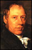

History
During the summer of 1808 at the then outskirts of London, a steam engine designer's extraordinary inventiveness and perhaps desperate economical situations, culminated in an unusual demonstration, which was decades ahead of its time.
Richard Trevithick (1771-1833), an engineer from Cornwall and one of the pioneers of high-pressure steam engines, demonstrated the use of steam engine as a locomotive for passenger rail travel, reaching speeds of up to 12 mph.
The public could take a ride in an open carriage attached to the steam engine for a fare of 5 shillings (approximately equal to 15 British Pounds in 2007). The demonstration was later fondly given the name of "Steam Circus" by writers.
In general, Trevithick wanted to demonstrate that a steam locomotive was faster and more reliable means of travel than horse carriages. To prove his point, Trevithick proposed a bet that his steam locomotive will outlast a horse carriage in a 24 hours long race around the 30 meters diameter circular rail track. Perhaps for this reason, the steam engine was jovially named "Catch Me Who Can" by the sister of Davies Giddy (a long-time patron of Trevithick's work and Member of Parliament for Bodmin). It is suggested that on 3rd of August 1808, the race took place and Catch Me Who Can won (Based on a communication between George Pritchard and Jan Davis, found during an online search).
A replica engine, generally believed to be based on the design of the original engine is on display at the Science Museum in London. In a keynote lecture at the Early Railways Conference in 2008, John Liffen from Science Museum suggested that a painting of a steam engine by John Claude Nattes, depicts the Catch Me Who Can in a state of its delivery from the factory. The proposal is based on the close resemblance to Catch Me Who Can and proximity of the location of drawing to Steam Circus. However, the appearance of an active construction site in the background of the drawing and the lack of specific reference to Trevithick in the drawing caption suggests that the steam engine could also be one instead that for pumping water out of the New River.
As the rather expensive admission fee was only amenable to a few people, Trevithick reduced the fare to 2 shillings. However, the heavy weight of steam locomotive (weighing about 8-10 tonnes), weak construction of the rail track, and the soft ground caused the rail track to collapse and thus derailment of the steam locomotive. This unfortunate incident and lack of returns dealt quite a big blow to the morale of Trevithick. The failure to complete the Thames Driftway Project (the main reason for which Trevithick came to London in 1808) and issues in patenting his steam engines eventually led him to abandon his plan to demonstrate the steam locomotive at the Newmarket Meeting later that year but also stop designing steam engines. Trevithick then set himself on a number of ventures even as far in South America, sadly with little success.
There appears to be some controversy about the financial situation of Trevithick at the time of his death in Dartford. In 1832, John Hall, the founder of Messrs J and E Hall Ltd invited Trevithick to Dartford to carry out experiments on steam turbine for ships. However, Trevithick died of pneumonia within a year in April 1833. It is known that John Hall had invested GBP 1200 (approximately equivalent to GBP 90,000 in 2007) on this work. In the book "Life of Richard Trevithick" written by Francis Trevithick, the son of Richard Trevithick, wrote that his family received a letter dated 22nd April 1833 from Mr Rowley Potter of Dartford (proprietor of the Bull Hotel; now The Royal Victoria and Bull Hotel). The letter informed that Trevithick had died on the morning of that day, after a week's confinement to his bed (this suggests that Trevithick was seriously unwell). "He was penniless and without a relative by him in his last illness. The mechanics from Hall's Works acted as bearers at his funeral, and they paid the burial fees. They also paid for watchmen to remain by the grave to prevent body-snatching, then prevalent in the neighbourhood." Some researchers suspect that this financial state of Trevithick contradicts the fact that he had received a large sum of money from John Hall, a well known figure in Dartford at that time. Was Trevithick in possession of the sponsorship money at the time of his death and lost it in a foul play by someone or had he spent it all on the experiment? It would simply be a case of looking into the expenses of John Hall, Richard Trevithick, and Rowley Potter to get a clearer picture on this matter.
Mystery
While it is generally believed that the demonstration took place in the vicinity of the University College London and Euston Train station, the exact location of the demonstration has puzzled railways historians and continues to attract new ideas. This project set out to collect various pieces of information e.g. newspaper articles, letters, illustrations, and personal communications to undertake a systematic and multidisciplinary approach to establish the most likely location of the demonstration. The project combined a variety of techniques from 3D Modelling, Geographical Information Science, Arts History, and Urban History.
The main motivations behind the project and the website were, firstly to solve an interesting urban heritage and early railways history related mystery and, secondly to disseminate the unique story of Steam Circus widely.
Tribute
In a letter to Davies Gilbert (Giddy), Richard Trevithick wrote "I have been branded with folly and madness for attempting what the world calls impossibilities, and even from the great engineer, the late Mr. James Watt, who said to an eminent scientific character still living, that I deserved hanging for bringing into use the high-pressure engine. This so far has been my reward from the public; but should this be all, I shall be satisfied by the great secret pleasure and laudable pride that I feel in my own breast from having been the instrument of bringing forward and maturing new principles and new arrangements of boundless value to my country. However much I may be straitened in pecuniary circumstances, the great honour of being a useful subject can never be taken from me, which to me far exceeds riches". Despite such bitter criticism from esteemed peers Trevithick always maintained a strong determination and sense of pride in his work. Some of his high pressure steam engines did in fact explode but he continued to improve his designs. Imagine how we would be travelling today, if he hadn't.